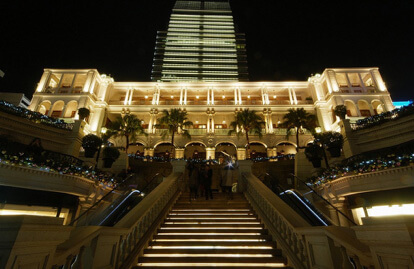
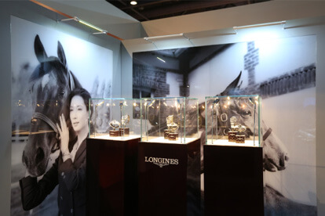
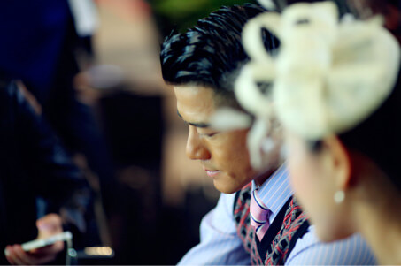

飞翼沙漏 优雅香港
执一把优雅之匙旋开动感之都的帘幕，以飞翼沙漏为由踏上一段新奇的发现之旅，在跃动韵律的马蹄声声中、尝试着去探秘与印象中截然不同的香港优雅，这优雅是奥黛丽-赫本的甜美生活，这优雅是英国王室的皇家个性，这优雅更是绅士们所散发的自信之光，Elegant is an Attitude & Attitude is everything！
缘，始自1881
1881，浪琴缔造经典的时刻；1881，香港极致优雅的代名词；1881，缘，就是这样妙不可言。浪琴与马术的亲密缘分始自1881年，在以骑师和赛马为背壳的第一块计时秒表问世后三年，浪琴在1881年的纽约赛马大会上奠定了自己在马术届的金牌荣耀，将计时精准到秒的浪琴表不仅是裁判和骑师的计时专用表，瑞士传承的精湛工艺更是赢得了马术爱好者们的贵族式青睐，而时至今日，浪琴已成为国际赛马联盟与国际马术联合会的官方合作伙伴，一年一度的“浪琴表香港马术大师赛”更是亚洲唯一荣获CSI5*（五星级）资格的室内马术障碍赛，马术运动的优雅气质被飞翼沙漏演绎得淋漓尽致。
1881，之于香港而言是一段务必被铭记的历史，百年功勋的旧水警总部在回归前卸任，只留下水警车静静地停在那里讲诉曾经的故事。1881 Heritage，维多利亚式的水警总部主楼现在是古迹酒店，十间海湾客房或是英伦腔调、或是招牌式的20年代上海风貌，古朴的马厩已改造成新古典主义的餐厅、消防局则改为了奢侈品牌的时装店，或许唯一未曾改变的是每天下午一点，时间球塔的时间球仍会如往昔般准时降落，在海港城、半岛酒店、北京道一号和文化中心的正中央，1881的脚下是香港航海图和子午线地图，铭刻着一段只属于Hullet House的光辉岁月，无论白天与黑夜都自有一番赏心悦目的情调。
你在桥上看风景，看风景的人在楼上看你；明月装饰了你的窗子，你装饰了别人的梦，AL MOLO Ristorante Italiano正拥有这般秀色可餐的臻美至境，全港最棒的意大利餐厅？Michael White正创造着源于地中海的不可思议，从薄饼烤炉前方的意式雅座，到傲视耽美维港的临海露台，AL MOLO俨然如一座秘密花园般在静候，氛围倒是有些不那么香港了，若是恰巧赶上既不炎热，亦不下雨的晴朗日子，或与家人一起欢聚，或约上三五好友与知己，品味着多汁的特级生蚝、鲜嫩的烤小羊排及经典的AL MOLO烤虎虾，这缤纷绚烂的维港暮色必定是令人难忘的美妙。
甜美生活，真我个性
La Dolce Vita/甜美生活，这份甜美属于浪漫雅致的安妮公主，这份甜美属于永恒的优雅女神----奥黛丽-赫本，奢华愉悦的线条勾勒着浪琴Dolce Vita的摩登与时尚，更完美地诠释着优雅是一种态度的生活哲学。汲取黛绰维纳的灵感去觅寻香港的甜美味道，IFC的Angelina与巴黎城中店有着相同的乳白色装修风格，暖黄色的灯光则营造出最舒适惬意的下午茶氛围，精致的白色骨瓷和墙壁上的一幅幅精美绝伦的油画，更创造着梦回杜勒丽花园的穿越感，一份栗子蒙布朗+一杯热巧克力，甜美的下午茶后自然是要去都爹利街的，花岗石阶上的四盏煤气街灯早已是全港的最浪漫标签，这样的时刻你又最期待与谁在一起呢？
在主办浪琴表香港马术大师赛之外，浪琴还倾力支持已有300年历史的英国皇家阿斯科特赛马会，这可是每年英国社交日历上最重要的一场盛事，同时浪琴表还是英女皇伊丽莎白二世赞助的英联邦运动会的官方计时及官方比赛用表，王室印迹与浪琴表所追求的真我个性完全吻合，而香港的优雅亦总是飘散着英国王室的皇家个性，这符号或是前九广铁路的古老钟楼，亦是气势恢宏的半岛酒店或是唯美的赤柱美利楼，更是黛安娜王妃最爱的Penhaligon’s Bluebell味道。

高贵典雅的王室风范，蕴藏着古典味道的装饰与陈设，一把黑檀蕾丝折扇确已有百年的历史，每瓶香氛背后都在诉说着与王室的不解之缘，Penhaligon’s 1870既是个极致低调却优雅奢华的符号，自维多利亚女王时代起至今的140年间，潘海利根不仅在1903年即首次获得亚历山大女皇颁发的皇家任命授权，更在1956年和1988年分别获得了爱丁堡公爵和威尔士亲王的认可及皇家授权，在属于香氛的世界里，Penhaligon’s正是完美与高素质的皇家代名词，在潘海利根订制一瓶专属于自己的香氛味道吧，如王室般追求定义优雅的真我个性。
飞翼沙漏，优雅格调
他是《时尚女魔头》中的英俊反派，他是《西游记》中的现代牛魔王，他是《超感神探》中的心灵捕手，他是《寒战》中的睿智警官，他是优雅的贵族西蒙·贝克，他是品味格调的天王郭富城，他们是浪琴表优雅形象大使。从爱因斯坦和亨弗莱·鲍嘉，到罗斯福和戈尔巴乔夫，再到迪马吉奥和安德烈·阿加西，直至西蒙·贝克和郭富城，浪琴表的百年绅士明星谱岂止星光灿烂，他们每个人都在自己的专属领域内倾注着无限热情，从容地追求着属于自己的伟大梦想，就像郭富城所说，“认识我的人都知道过去的10年里我有在努力，我是个不喜欢原地踏步的人，不喜欢重复自己的人”，他们散发着属于飞翼沙漏的自信之光。
荧幕上的西蒙·贝克穿着订制西装和纯手工皮鞋，驾驶着古董轿车去解构都市罪者的心灵，举手投足间展现着超离于现代的古朴时尚，而这股丰厚的底蕴亦暗合香港所独有的怀旧魅力，都市丛林中太平绅士们的传统味道，在SoHo区的70s古着店挖掘不败经典，尽可收获爱马仕的立拍得相机，one & only的70年代LV及香奈尔，耳边则回响着源自依帕内玛海滩的BossaNova韵调，想更中古些则可去结志街的General Store寻宝五六十年代，或者去上环的OnceStyle精选高定孤品，在香港发现一块曾属于阿尔伯特二世的浪琴表也说不定噢，因为珍藏是一种既有趣有品、而又与众不同的生活方式，珍藏更是一种优雅的精神。
香港从不掩饰自己的瑰丽夜景，壮阔的维多利亚港暮色更是令人心醉的，选一个晴朗之夜在洲际酒店的Harbourside临窗而坐，耳畔边回旋着悠扬的爵士韵律，目迷臻美尽是关于岁月的隐秘情话，若这一夜恰是红色情人节则更多了些温柔与暧昧，惬意着饕餮于海鲜自助的盛宴，爱心模样的点心与甜品更是洲际酒店独有的米其林星级味道，而在这夜繁华的背后则是几代港人的辛勤劳作，浪琴表优雅形象大使郭富城既是典型的香港精神代表，“春节只有几天，但也要去拍戏”即是他在访谈中最触动笔者的一句话，从84年进入TVB舞蹈训练班至今已经30年，50岁的Aaron永恒在坚持着勇往直前的人生理念，任世事喧嚣却独守一份飞翼沙漏的优雅格调，Elegant is an Attitude & Attitude is everything！
